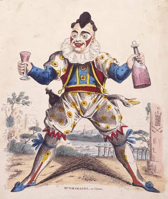
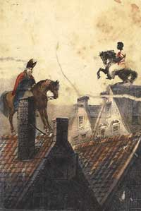

{kind=link}
De eerste clown zoals we die nu ook nog kennen, met een wit opgemaakt gezicht en grote rode lippen, Grimaldi (zie afbeelding hieronder uit de 18e eeuw), droeg een pak dat was afgeleid van dat van de Harlekein of de Hofnar, en die kleding is een mengelmoes van kledingstijlen. Zo zijn de pofbroeken en kousen kenmerkend voor pages, maar die droegen geen uitbundige kragen. Omdat de Zwarte Piet vaak een soort clown uithangt maar ook werkt aan het hof van Sinterklaas, draagt hij ongeveer dezelfde kleding. Pages droegen echter nooit zo'n grote kraag, clowns wel.
Sint Nicolaas was een bisschop. Hij was bisschop van de Grieks-Katholieke kerk in de plaats Myra in Klein-Azië (tegenwoordig Turkije).
Sint Nicolaas leefde en werkte in Klein-Azië. Door de handel met Italië kwam hij ook in dat land. Italië was gedeeltelijk van Spanje. Spanje was in die tijd een rijk land waar veel luxe artikelen en lekkers vandaan kwamen. Dus dachten de mensen dat Sint Nicolaas daar zelf ook vandaan kwam.
Sint Nicolaas is in het jaar 270 geboren. Dus nu is hij heel oud. Weet jij hoe oud? De Sint weet het zelf ook niet meer.
Voordat het Sinterklaasfeest werd gevierd, vierde men een vergelijkbaar, heidens feest waarbij Wodan (ook een man met een witte paard op een wit paard) langs de huizen ging om kadootjes aan kinderen te geven. Voordat hij dit deed, stuurde hij twee zwarte raven die bij de schoorsteen luisterden of de kinderen zoet waren geweest. In de loop van de jaren hebben Pieten de rol van de raven overgenomen. De zwarte kleur is gebleven om verschillende redenen. De meest praktische reden is omdat een Zwarte Piet gewoon moeilijk is te herkennen. Daarnaast is Piet door al die jaren schoorsteenvegen zo zwart van het roet geworden dat niemand meer weet welke huidskleur hij oorspronkelijk had. Het is ook helemaal niet belangrijk. Het doet er toch niet toe of je zwart, wit of geel bent, of welke kleur dan ook. In dit kinderboek uit 1848 heeft de Sint daar al een uitgesproken mening over.
Er is een verhaal dat de Sint een slaaf, genaamd Pitter, uit Ethiopië had bevrijd. Als dank ging deze voormalige slaaf voor Sint Nicolaas werken. De Sint had dus zelf nooit slaven in dienst, integendeel. Hij was hier altijd zeer afkeurenswaardig tegen! In een van de eerste afbeeldingen van Zwarte Piet, hieronder afgebeeld (afkomstig uit dit boek uit 1850), zit Zwarte Piet trots en fier op een paard, boven Sinterklaas. Dat is geen afbeelding van een slaaf. Het woord 'knecht' waar Piet in liedjes vaak naar wordt genoemd betekent gewoon 'werknemer'.

De Germaanse god Wodan reed op een groot wit paard. Vroeger vonden hoge heren dat voornaam en apart staan en daarom reden zij graag op witte paarden of schimmels.
Sint Nicolaas wil als gever nooit gezien worden en brengt in het donker met Piet alle kadootjes en lekkers door de schoorsteen in de huiskamer. Ook de god Wodan hield op deze manier contact met de mensen op aarde. Wellicht ligt daar de oorsprong van dit gebruik.
Al eeuwen wordt een schoen gebruikt om bijzonderheden in te ontvangen en omdat ieder kind zijn of haar eigen schoen heeft, kan Piet zich nooit vergissen met het uitdelen van de kado's.
Nooit. Als het moet wordt er wel mee gedreigd, maar Sint Nicolaas houdt van de kinderen en laat ze daarom altijd bij hun vader en moeder.